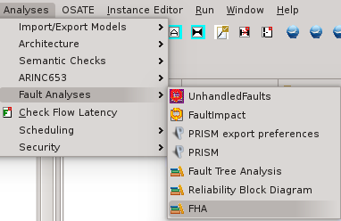
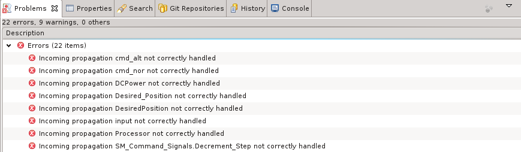
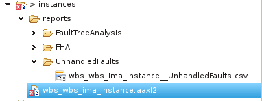

When reusing components in an architecture, we may reuse their related error description. However, when reusing the component, some faults propagated may not be handled by the components connected to it. Also, components that are connected may expect to receive fault types that are not propagated.
To use the function, select your instance model and select the UnhandledFaults function in the Fault Analysis menu, as shown below.
Once the function is invoked, it generates errors in the Eclipse error view, as shown below.
Also, all errors are finally written in a csv file generated under the reports/UnhandledFaults subdirectory, as shown below.
